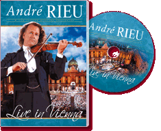

|
Live in Vienna (2007) - 145 Minutes
|
 |
|
Live in Vienna, a concert with André
Rieu on the square in front of the imperial Hofburg
Palace in the heart of Vienna, is 135 minutes of pure
pleasure for the eyes and ears. It includes superb
compositions from the most famous Viennese composers:
Johann Strauss, Franz Lehár, Emmerich Kálmán, W.A.
Mozart, Robert Stolz and many others, against the
background of the most beautiful, stylish scenery you
can possibly imagine. The Johann Strauss Orchestra and
Choir were joined in this wonderful concert by the
Ballet of the Vienna State Opera, the Vienna debutantes
from the Elmayer Dance School, the Platinum Tenors, the
sopranos Dagmar Koller, Carmen Monarcha, Carla
Maffioletti, Mirusia Louwerse and Suzan Erens, and the
interpreter of the traditional Viennese song, Karl Moik.
World-famous waltzes and melodies: the Blue Danube, Im
Prater blühen wieder die Bäume, Lippen schweigen, Mein
Herr Marquis, Dein ist mein ganzes Herz, Komm Zygany and
many other wonderful compositions. As you look and
listen, with this DVD you’ll immediately think yourself
back in the romantic Vienna of the 19th century! |
Where to buy?
|
|
DVD Tracklist
- Wiener Bürger
- Tritsch Tratsch Polka
- Fächer Polonaise
- Fledermaus Quadrille
- a) Komm Zigany b) Csárdás
- Gold und Silber
- Eine kleine Nachtmusik
- Mein Herr Marquis
- Wolgalied
- Perpetuum Mobile
- Porgi Amor
- Im Prater blüh'n wieder die Bäume
- Lippen schweigen
- Schatzwalzer
- Dein ist mein ganzes Herz
- Ganz ohne Weiber geht die Chose nicht
- Meine Lippen sie küssen so heiß
- Morgenblätter
- Ich muss wieder einmal in Grinzing sein
- The Sound of Music
- An der schönen blauen Donau
- Radetzkymarsch
- Strauß & Co
- Wien du Stadt meiner Träume
|
|